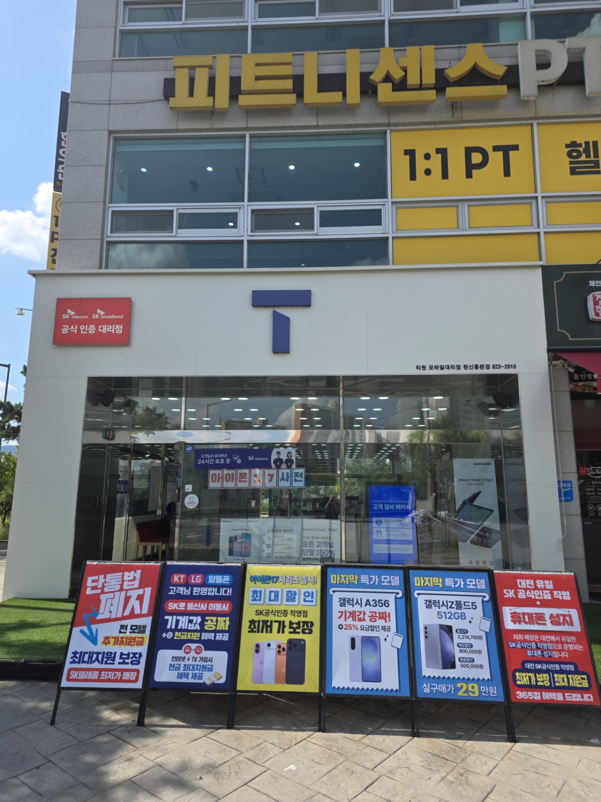

휴대폰 최신 소식
IT 기술 변화와 매장 지원금 소식을 빠르게 안내
신모델 이슈, AI 기능 변화, 시기별 매장 지원금 포인트를 고객 입장에서 이해하기 쉽게 전달하는 영역입니다.

T1 모바일
고객이 가장 먼저 확인해야 할 것은 브랜드의 말이 아니라 결과입니다. 티원모바일은 판매 경쟁력, 사후 처리 역량, 다점포 운영 노하우를 바탕으로 가까운 매장에서 더 좋은 조건과 더 편한 상담 경험을 제공하는 것을 목표로 합니다.
티원모바일 매장이 기본적으로 제공하는 공통 혜택을 고객이 한눈에 이해할 수 있도록 카드형 소식 섹션을 구성했습니다. 각 카드에는 추후 썸네일 이미지를 넣을 수 있도록 이미지 영역도 함께 반영했습니다.
신모델 이슈, AI 기능 변화, 시기별 매장 지원금 포인트를 고객 입장에서 이해하기 쉽게 전달하는 영역입니다.

휴대폰뿐 아니라 인터넷과 TV까지 함께 변경할 때의 추가 지원금과 결합 이점을 자연스럽게 보여주는 영역입니다.

오프라인 매장만이 줄 수 있는 케어 경험과 방문 이유를 만들어주는 생활밀착형 서비스 소식에 적합한 카드입니다.
티원모바일은 누적 고객 수를 통해 검증된 운영 경험을 쌓아왔고, 많이 판매할 자신이 있기 때문에 고객님들께 최대한의 혜택을 드리고자 노력합니다. 단순히 일시적인 조건만 보여주는 것이 아니라, 가격과 사후 처리, 혜택의 현실성까지 함께 비교할 수 있도록 설계합니다.
누적 고객 수를 바탕으로 검증된 운영 경험을 쌓아왔고, 그만큼 더 많은 고객님께 실질적인 혜택을 드릴 수 있도록 설계합니다.
복잡한 통신 조건을 고객이 하나하나 따질 필요 없이, 티원모바일이 상황에 맞는 최적의 구매 방향을 제안합니다.
개통으로 끝나는 관계가 아니라, 명의 · 결합 · 기기변경 · 사후 문의까지 이어지는 관리 경험을 제공합니다.
단순한 설립 연도가 아니라, 대표 연혁과 브랜드 성장 과정을 통해 왜 고객이 티원모바일을 믿고 상담할 수 있는지 보여주는 구조입니다. 실제 누적 고객 수, 운영 기간, 확장 지점 수, 주요 성과를 숫자로 넣으면 신뢰감이 훨씬 강해집니다.
창업 배경, 통신 유통 경험, 확장 과정 등 신뢰를 높이는 스토리 영역으로 구성합니다.
매장 확장, 누적 고객 수, 운영 노하우 등 숫자와 사례 중심으로 신뢰 형성을 돕습니다.
여러 소매 매장을 하나의 브랜드 경험으로 연결하는 구조를 강조합니다.
여러 개의 직영 매장을 하나의 브랜드 경험으로 연결합니다. 위치 서비스 기반 매장 매핑 기능을 적용하면, 사용자가 현재 위치를 기준으로 가까운 매장을 우선 추천받을 수 있습니다.
사용자 위치를 기반으로 가까운 순으로 매장을 정렬합니다.
거리, 운영시간, 상담 가능 서비스 등 확장 정보 연결이 가능합니다.
네이버지도, 카카오맵, 티맵 등 외부 앱과 연계해 길찾기로 전환할 수 있습니다.
이 페이지는 단순 회사 소개용이 아니라, 브랜드 신뢰 형성 → 혜택 설득 → 가까운 매장 연결 → 상담 전환까지 한 흐름으로 설계한 초기 랜딩 구조입니다.